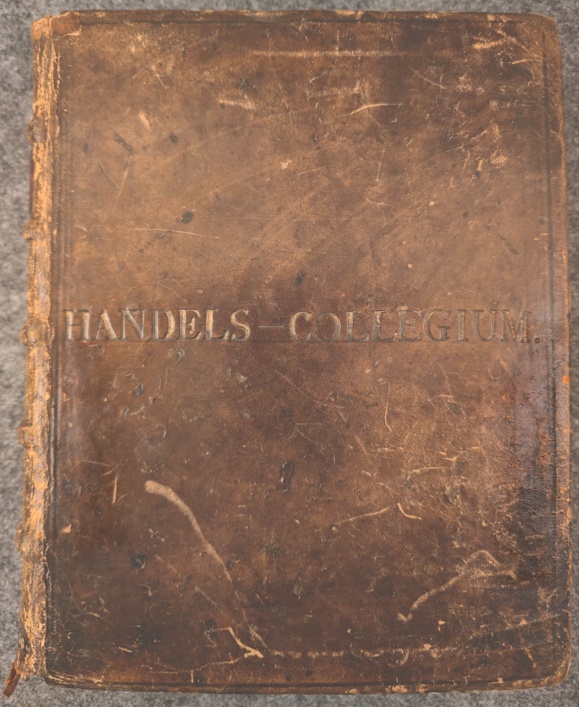
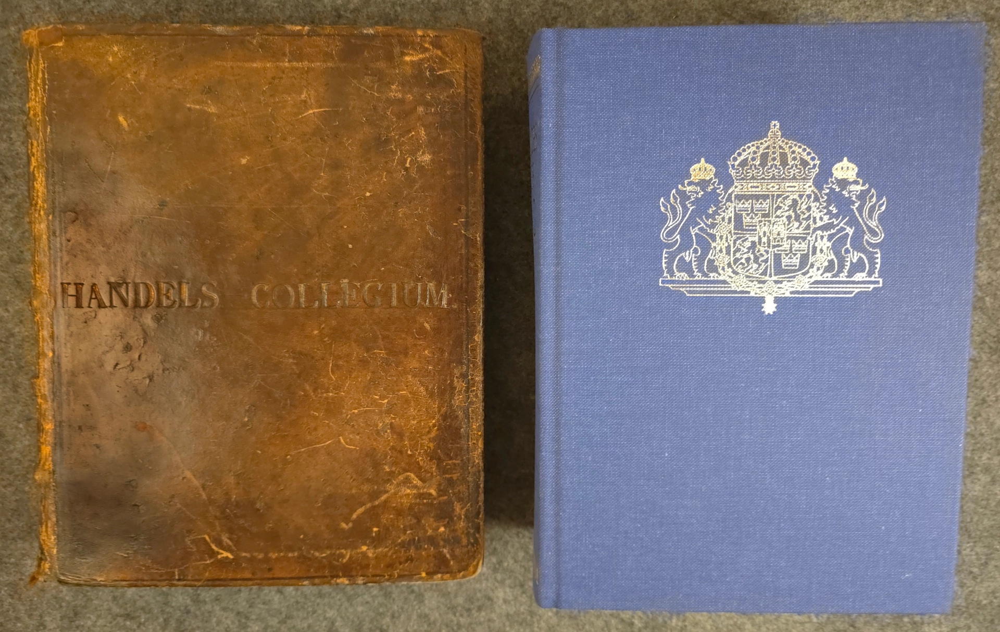

What is this document?
It is a monumental legal code born out of a vision established in 1686: to create a comprehensive, clear, and unified set of laws for all citizens, leaving nothing to the arbitrary whims of judges.
Historical significance & relevance within the context of Swedish legal history, this book represents both the definitive end of the medieval legal tradition and the starting point of a modern era. Its immense historical and academic value lies in three main areas:
- Unified Legal System: For the very first time, Sweden achieved a common legal framework that applied to both the countryside and the cities.
- Bridge Between Eras: The law book is a fascinating blend of conservative tradition and modern legal practice. It retained traditional medieval structures—such as dividing the law into specific codes (balkar) and using practical, concrete rules rather than abstract theories—while successfully updating and codifying centuries of evolving legal practices.
- Reflection of the "Era of Liberty": Perhaps most importantly, the artefact is defined by what it deliberately excludes. Influenced by the political climate of the Era of Liberty (Frihetstiden), the creators kept fundamental constitutional laws (grundlagar), class privileges, and trade regulations completely separate from this general law. This separation was a deliberate ideological choice to guarantee the division of power and ensure that absolute monarchy (envälde) could never be re-established in Sweden.

Sweriges Rikes Lag, 1734
The Books as Artefacts
When placing the 1734 artefact next to a modern 2023 Swedish law book, several fascinating parallels emerge. Interestingly, neither book contains all the laws of Sweden. They are both curated collections (författningssamlingar) printed by private entities—a private printer in 1736, and Norstedts Juridik today—designed to serve as practical reference tools.
The major difference lies in promulgation. Today, when the Riksdag passes a new law, it is instantly published online and becomes legally binding. In the 18th century, the physical printing and distribution of this exact book to courts and parishes across the country was the primary method of making the law known and enforceable.
The Evolution of Justice: "Stöld"
By examining the transcribed "Stöld" (Thievery) chapter in this digital edition, we can observe clear ideological shifts over the last 300 years. The core concept of financial restitution remains intact—today, just as in 1734, the thief is responsible for compensating the plaintiff for damages.
However, the punitive framework has transformed entirely. The 1734 law relied heavily on physical deterrence, legally prescribing severe bodily punishment such as whipping, birching, and even hanging for repeat offenders. Over the centuries, the Swedish legal system has completely moved away from these methods, abolishing corporal and capital punishment in favor of rehabilitation, fines, and imprisonment.

Scale Comparison (Top)
Scale Comparison (Side)
Why remediate?
This artefact has previously been digitised and made publicly available through litteraturbanken. The aim of this project is to independently replicate that remediation process and critically reflect on the methodological choices involved.
Specifically, we remediated this text to achieve three primary goals:
- Methodological Reflection: By acting as "DIY archivists," we engaged directly with the physical and technical constraints of digitisation—such as lighting, framing, and hardware limitations. This allowed us to critically examine the gap between theoretical archival standards and practical execution.
- Multimodal Accessibility: A flat image of 18th-century Swedish is inaccessible to many. We remediated the artefact into an interactive, multimodal experience by adding bounding-box navigation, modern Swedish and English translations, and Text-to-Speech (TTS) functionality, significantly broadening the potential audience.
-
Open Data & Standards Compliance: Rather than just displaying a picture, we embedded rigorous structural and descriptive metadata (Dublin Core, EXIF, IPTC) into the files. By hosting the raw, uncompressed archival
.tifffiles on Zenodo, we transformed a static web image into a verifiable, open-access dataset for future digital humanities research.